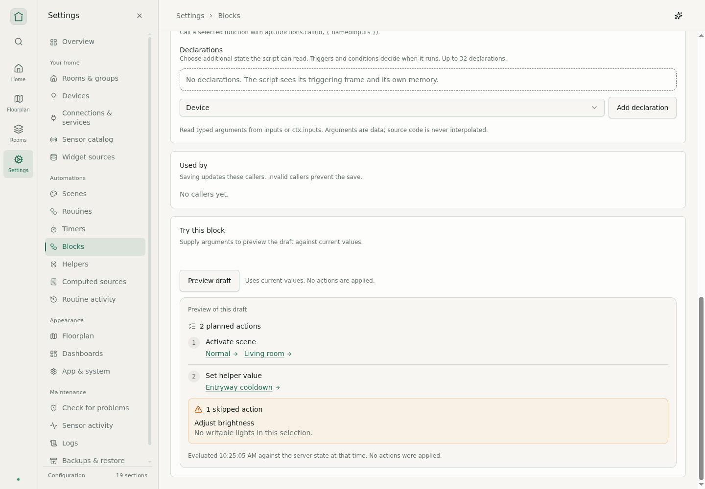
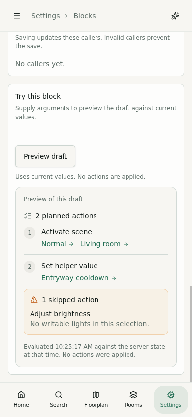
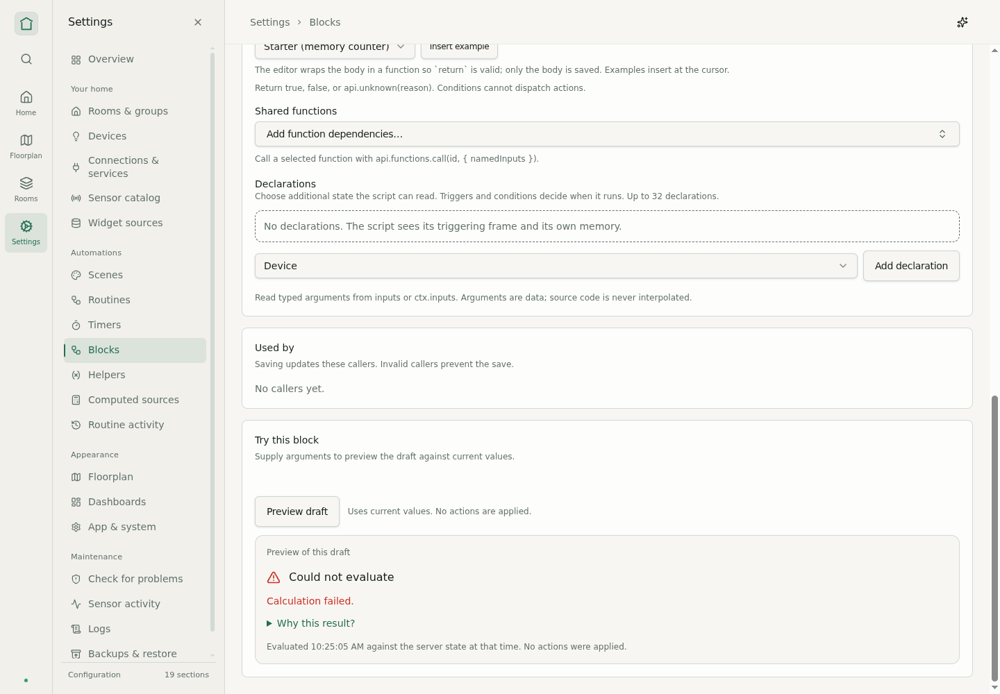
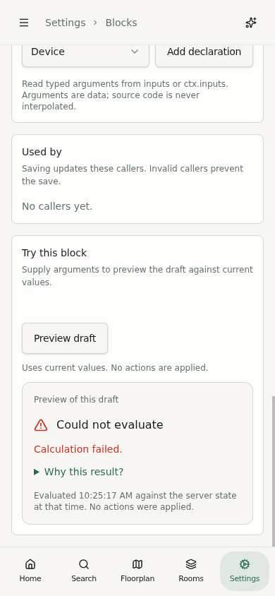
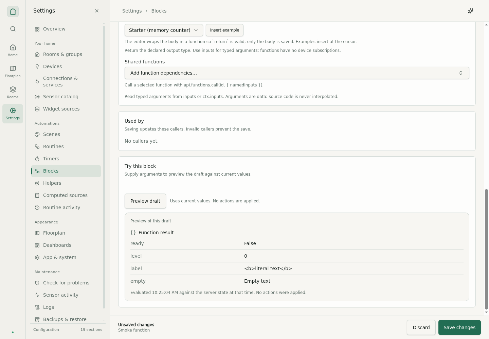
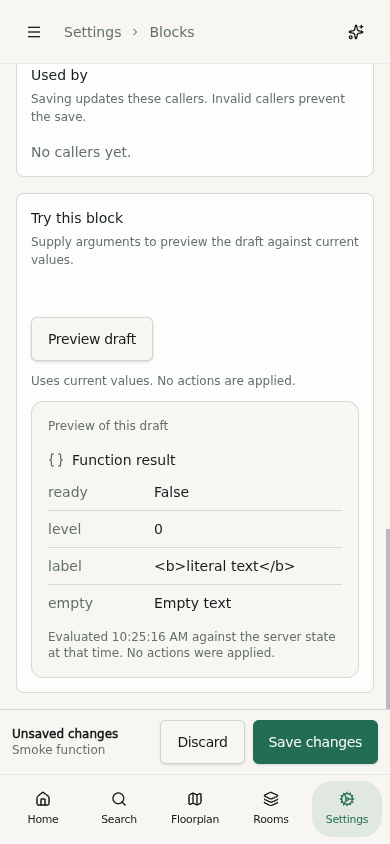
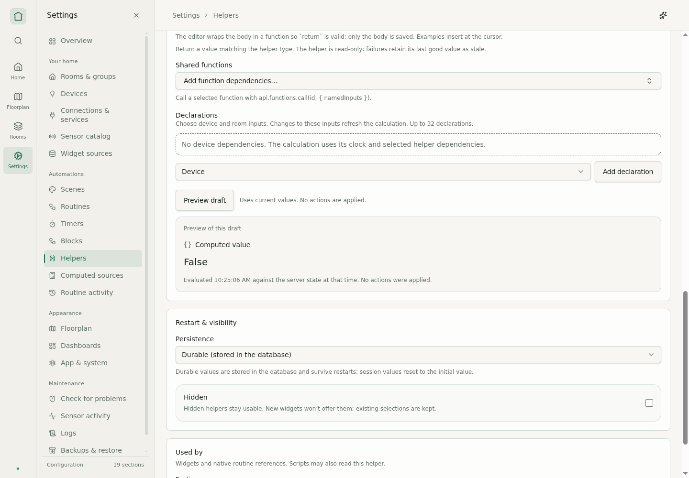
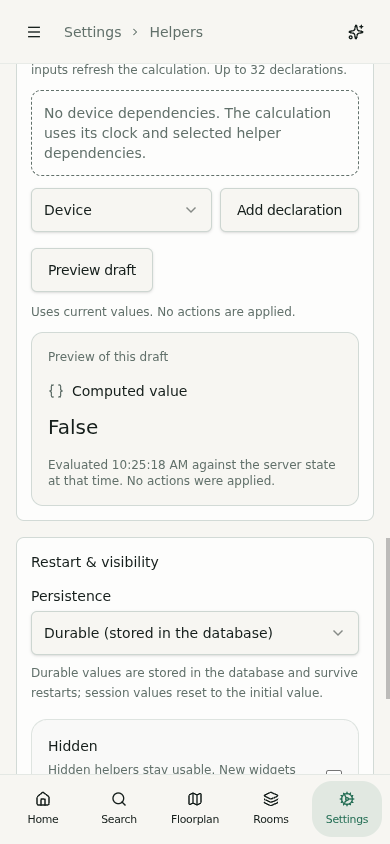

Automation previews · implemented
2026-10-02 · Production bundle, native Chromium input at 1440 × 1000 and 390 × 844. These are implementation captures with marked local fixture data. Preview response rendering is synthetic; supervised-worker execution and no dispatch have a separate Rust API test.
Verification · Current completion record
Actions and skipped steps




Condition result




Structured function output




Computed helper value



